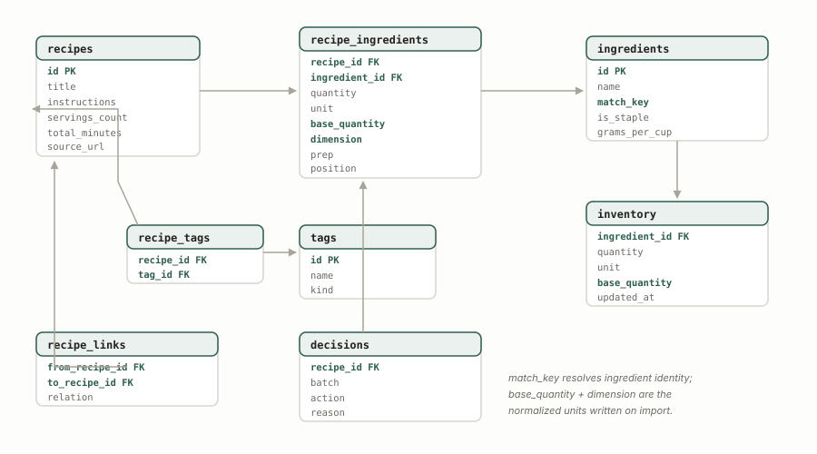

An MCP server over a normalized SQLite database of recipes, kitchen inventory, and cooking decisions. Ask it what to make and it ranks what you've already saved by how little you'd have to buy — then records what you actually chose, so the ranking improves instead of just accumulating.
Python · SQLite · MCP · pytest · GitHub Actions · MIT
Ask a language model what to cook and it invents something plausible. That's the wrong output twice over: it ignores the recipes you already know you like, and it doesn't know what's in your kitchen, so half the ingredients need a shopping trip. The fix isn't a better prompt — it's giving the model a real data store and a set of operations narrow enough that it can't wander.
Underneath the domain is a genuine data-modeling problem. "2 tbsp butter", "30g butter" and "1/4 stick of butter" are the same ingredient at three quantities in three unit systems, and a naive schema will happily tell you you're short on butter while you're holding a full stick.

recipe_ingredients is the join that carries
quantity and unit; inventory is what's physically in the kitchen;
decisions is the journal that makes the whole thing a data lake
rather than a recipe box.
Ingredients are stored once and referenced, so "butter" is one row no matter how many recipes use it. Quantities normalize to a canonical unit on write, which is what makes "can I make this?" a query rather than a guess. Recipes link to their variants, so a modified dish is a related record rather than an edit that destroys the original.
| Interface | 18 MCP tools — search, inventory, ranking, import, scaling, rating, shopping list, decision journal |
|---|---|
| Schema | 8 tables: recipes, ingredients, recipe_ingredients, inventory, tags, recipe_tags, recipe_links, decisions |
| Import | Reads a site's own structured data rather than reconstructing recipes from model memory, so quantities are exact |
| Tests | 7 modules, offline and fixture-based — no network in CI |
| CI | GitHub Actions on every push |
Given a recipe URL, the obvious move is to let the model read the page and write out the recipe. It works, and it silently rounds. Recipe sites publish machine-readable structured data, so the importer parses that instead. The model chooses which recipe; it never transcribes quantities. A language model is the wrong tool for a job with an exact answer.
Storing what the recipe said and converting at query time is simpler to build and puts the conversion in the hot path of every ranking query, where a failed conversion becomes a wrong answer rather than a loud error. Doing it on write means one canonical unit per ingredient, ranking is plain SQL, and anything unparseable fails at import when there's a human present to see it.
Doubling a recipe looks like an edit and isn't. If scaling wrote back, the saved recipe would drift every time someone cooked for a different number of people, and the original would be unrecoverable. Scaling returns a computed view and leaves the record alone; changing an actual ingredient creates a linked variant. The rule is that a recipe row means what its author wrote.
The tests concentrate on the two layers where this kind of tool fails quietly:
test_units.py and test_scaling.py cover conversion
and proportional math, and test_identity.py covers ingredient
matching. test_parsing.py and test_importer.py run
against fixtures rather than live sites, so CI doesn't depend on someone
else's markup staying still.